Diese Einheit vermittelt zuerst technische Grundlagen zum guten Prompten und
zum gesamten GitHub-Ablauf. Bahnwärter Thiel dient dabei als
literarisches Anwendungsbeispiel, bevor im Projektteil eigene Unterrichtskonzepte
und Umsetzungen entstehen. Es gibt keine Tests, keine Punkte und kein Zertifikat,
sondern einen einfachen, geführten Lernweg mit lokal gespeicherten Antworten.
Umfang4 Prompt-Impulse + 12 GitHub-Schritte
ProduktVeröffentlichte GitHub-Pages-Seite
ModusOhne Tests, Punkte und Zertifikat
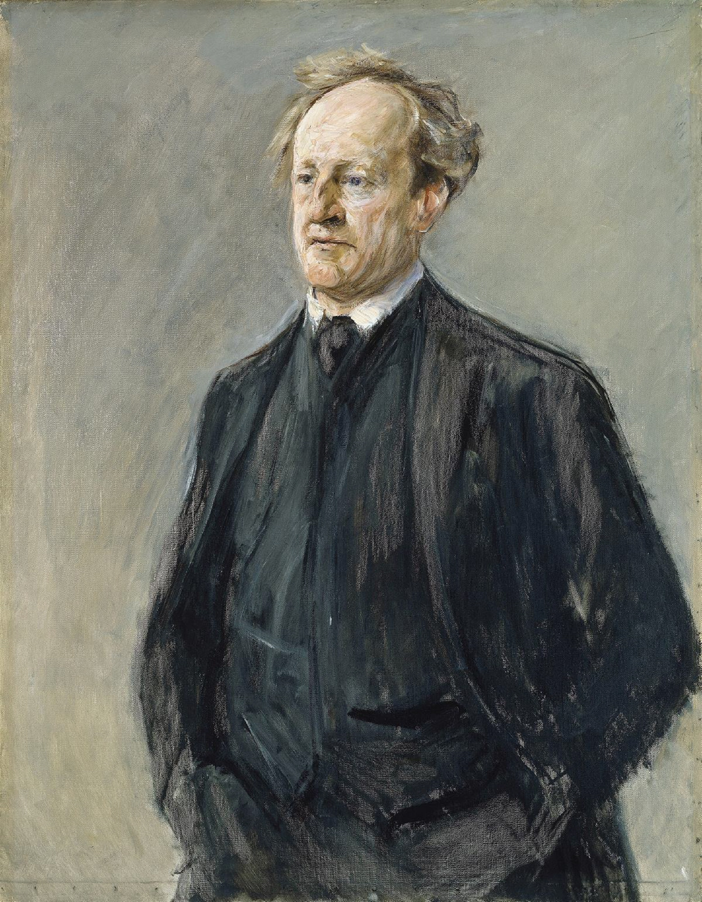
Gerhart Hauptmann als literarischer Bezugspunkt der Einheit
Literarischer Fokus
Ein Werk, drei Zugänge
Die Lernstrecke verbindet technische Grundlagen, digitales Publizieren und
literarische Anwendung. Gerhart Hauptmann und Bahnwärter Thiel
bilden dabei das Beispiel, an dem das Gelernte konkret erprobt wird.
Bahnwärter ThielNaturalismuspräzises Prompten
Arbeitsblatt
Persönliche Angaben
Noch nicht gespeichert
Passwortschutz für lokale Einträge
Optional: Schütze alle lokal gespeicherten Einträge mit einem Passwort.
Starte mit den technischen Grundlagen zum guten Prompten.
Arbeite danach die GitHub-Schritte der Reihe nach ab.
Nutze die Highlights auf den Screenshots bei Bedarf.
Nutze Bahnwärter Thiel als Anwendungsbeispiel und öffne danach den Projektteil.
Trage Beobachtungen und Ergebnisse direkt in die Felder ein.
Exportiere zum Schluss die Zusammenfassung als Lernnachweis.
Atmosphärischer Einstieg: Eisenbahn und Landschaft als Bildraum für Bahnwärter Thiel
Einstiegsszene
Ein Bild, das den Anwendungsraum öffnet
Die technischen Grundlagen zu Prompten und GitHub stehen in dieser Lernstrecke
zuerst im Zentrum. Dieses Bild bringt aber schon früh die Welt von
Bahnwärter Thiel ins Spiel und schafft den Übergang zum literarischen
Anwendungsbeispiel.
Auftakt
Technische Grundlage: Prompten am Beispiel von Bahnwärter Thiel
Merksatz
Rolle + Aufgabe + Kontext + Format
Gute Prompts sind konkret. Gute Ergebnisse entstehen durch gezieltes
Nachschärfen. Deshalb arbeiten wir hier mit einem Beispiel aus dem
Deutschunterricht.
Prompt-Formel
RolleAufgabeKontextFormat
Erst klar fragen – dann gezielt nachschärfen.
Prompt-Impuls 1
Start: Unspezifischer Prompt
Ausgangslage
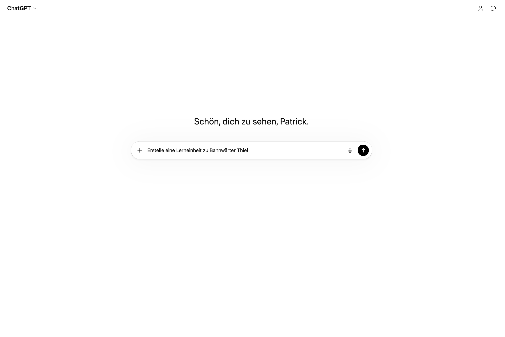
Ein sehr kurzer Prompt liefert oft nur allgemeine Ergebnisse.
Beispiel:
Erstelle eine Lerneinheit zu Bahnwärter Thiel.
Leitfrage: Was fehlt, damit die Antwort wirklich zum Unterricht passt?
Prompt-Impuls 2
Verbesserung: Rolle + Kontext
Erste Verbesserung
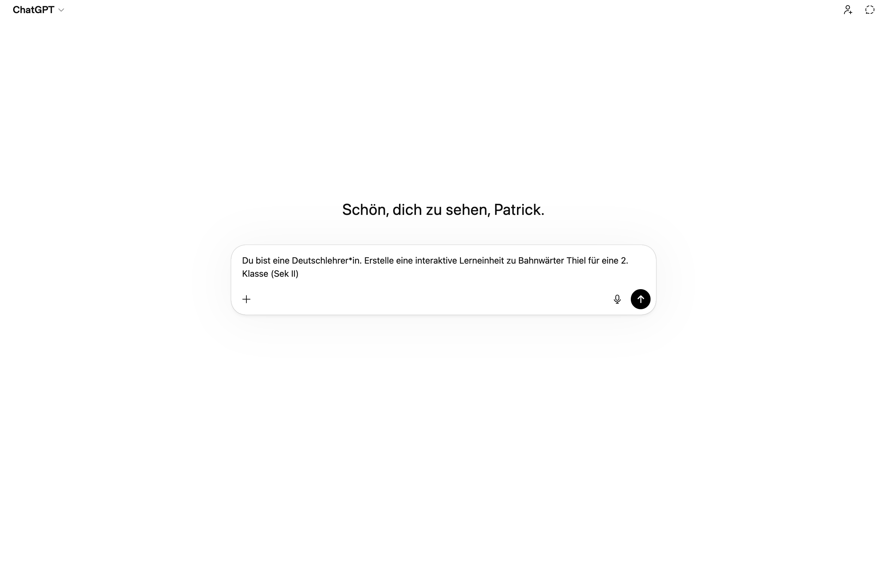
Ein besserer Prompt benennt Rolle, Lernzielgruppe und gewünschte Form.
Beispiel:
Du bist eine Deutschlehrer*in. Erstelle eine interaktive Lerneinheit zu Bahnwärter Thiel für eine 2. Klasse (Sek II).
Leitfrage: Welche Zusatzinfos machen den Auftrag klarer?
Prompt-Impuls 3
Iteration 1: Konkrete Szene
Gezielt nachschärfen
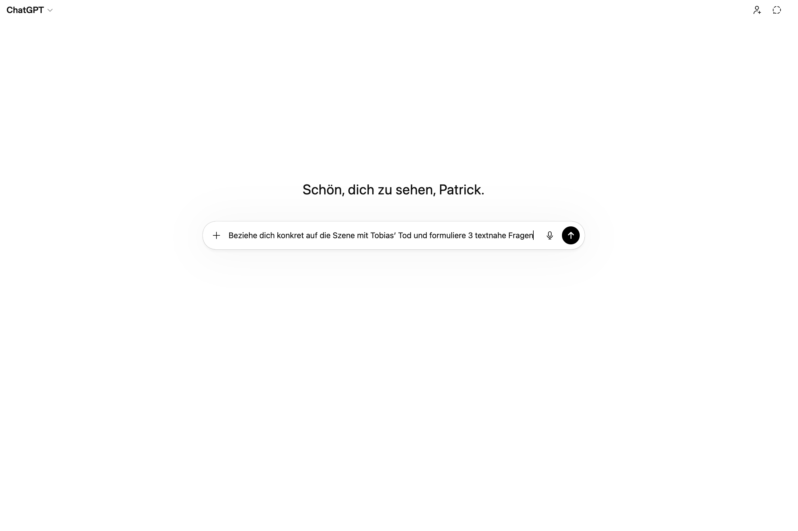
Mit einer konkreten Szene wird die Antwort textnäher und fachlich präziser.
Beispiel:
Beziehe dich konkret auf die Szene mit Tobias’ Tod und formuliere drei textnahe Fragen.
Leitfrage: Welche Textstelle oder Szene soll bearbeitet werden?
Prompt-Impuls 4
Iteration 2: Fachliche Präzisierung
Noch präziser
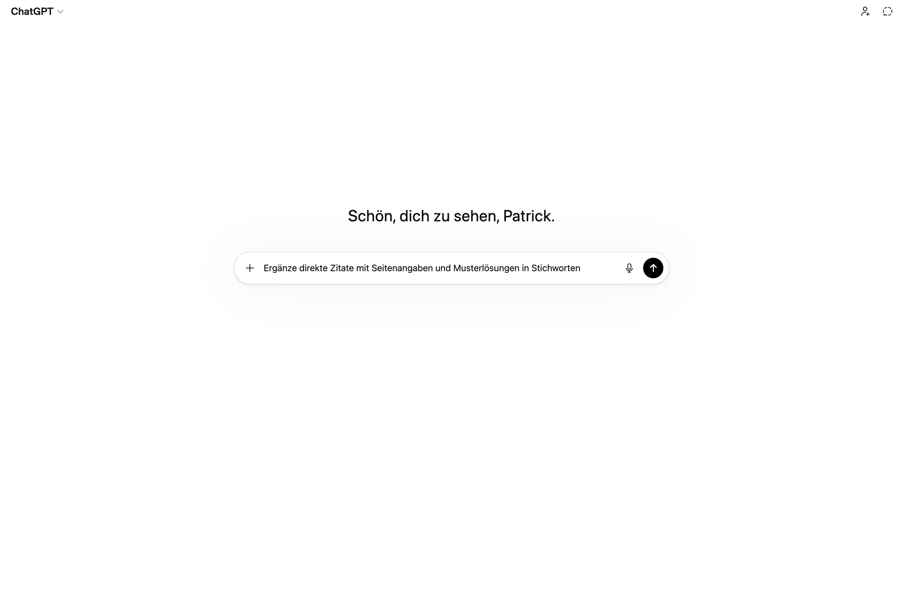
Die stärksten Ergebnisse entstehen, wenn du das gewünschte Format fachlich genau festlegst.
Beispiel:
Ergänze direkte Zitate mit Seitenangabe und formuliere die Fragen so, dass sie für eine interaktive Lernstrecke geeignet sind.
Leitfrage: Welche Form, Tiefe oder Quellenangaben brauchst du zusätzlich?
Lernroute
Schritt für Schritt durch die GitHub-Lernstrecke
Phase 1
Einstieg und Konto
Schritt 1
GitHub aufrufen und Startpunkt finden
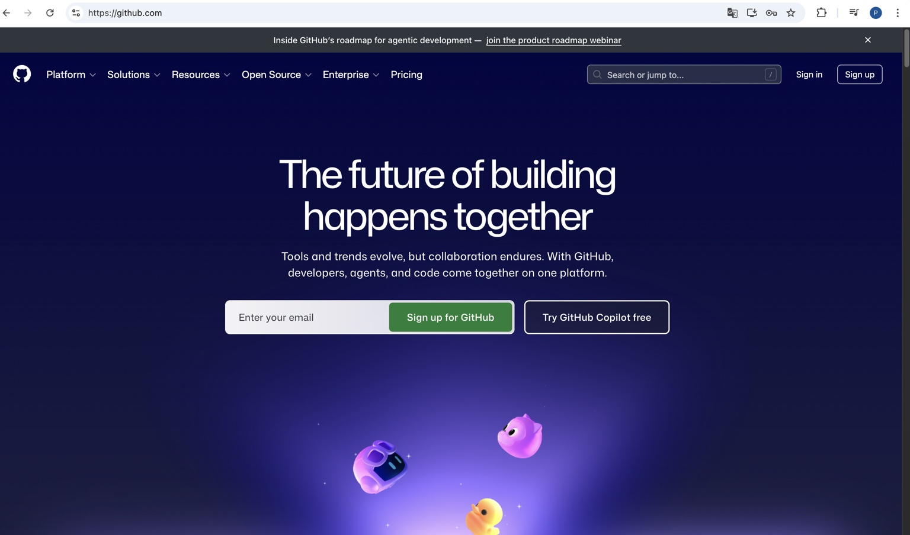
Sign up
Einstieg ins Formular
Öffne GitHub im Browser und finde den Einstieg zur Registrierung.
Erfolgskriterium: Du siehst, wo du die Kontoerstellung startest.
Schritt 2
Konto erstellen und Username festhalten
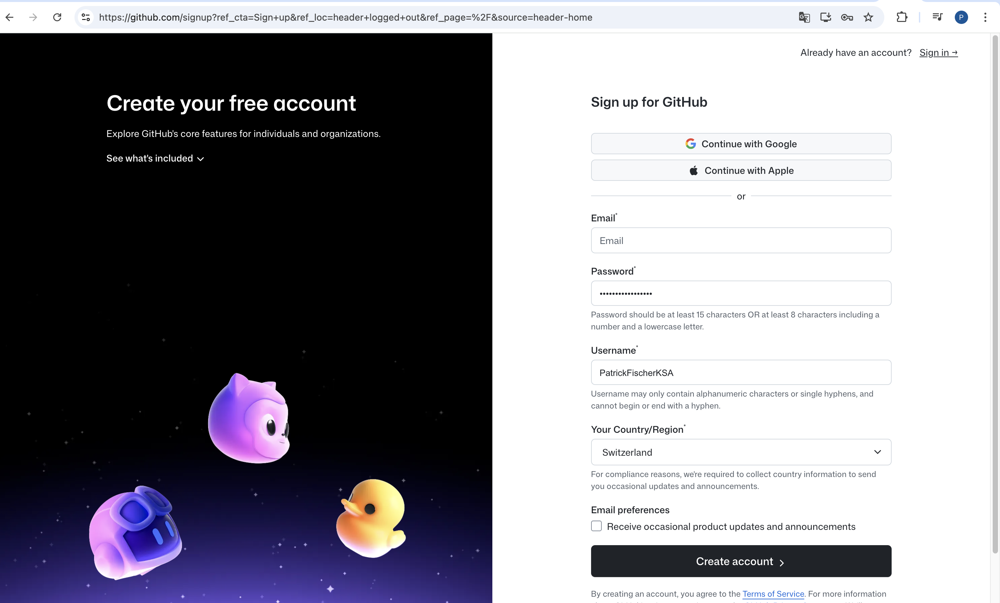
E-Mail
Passwort
Username
Create account
Fülle die Pflichtfelder aus und schliesse die Registrierung ab.
Erfolgskriterium: Dein gewählter Username ist notiert und du kannst dich anmelden.
Schritt 3
Im Dashboard orientieren
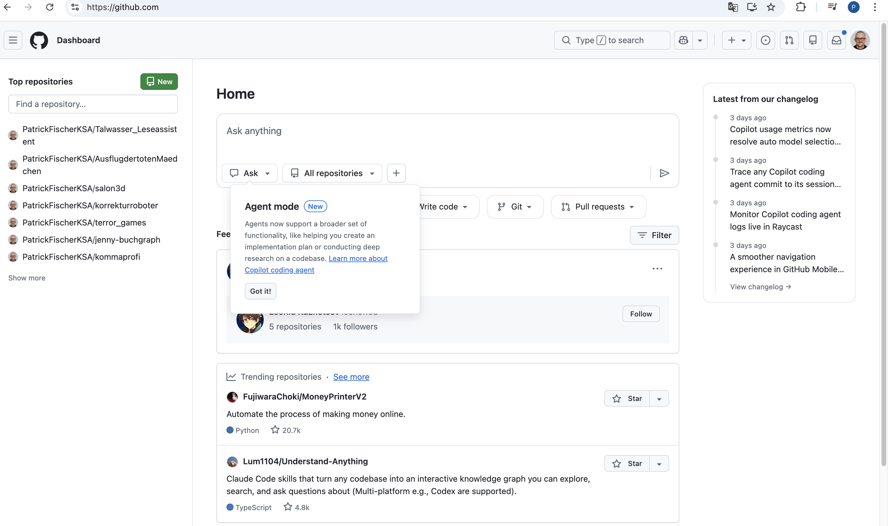
Plus-Menü
New
Suche nach dem Login das Menü, mit dem du neue Inhalte anlegst.
Erfolgskriterium: Du weisst, wo das Plus-Menü liegt.
Phase 2
Repository aufsetzen
Schritt 4
New repository auswählen
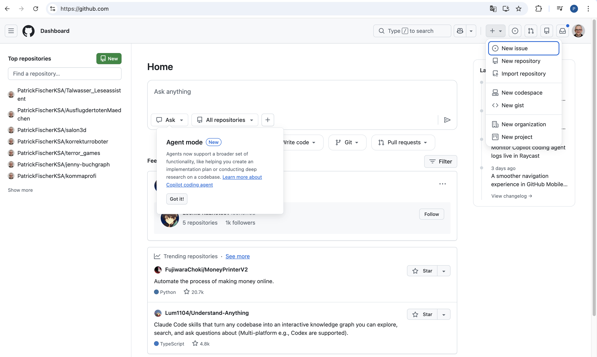
New repository
Öffne über das Plus-Menü den Weg zur Erstellung eines neuen Repositories.
Erfolgskriterium: Das Formular für das neue Repository ist geöffnet.
Schritt 5
Repository-Formular verstehen
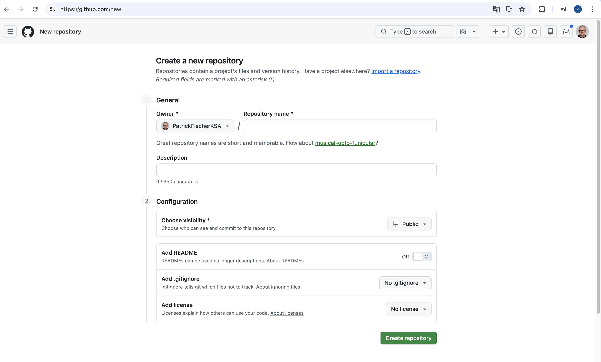
Repo-Name
Public prüfen
Create repository
Lies das Formular genau und entscheide, wie dein Repository heissen soll.
Erfolgskriterium: Name und Sichtbarkeit sind bewusst gewählt.
Schritt 6
Formular ausfüllen und Repository erstellen
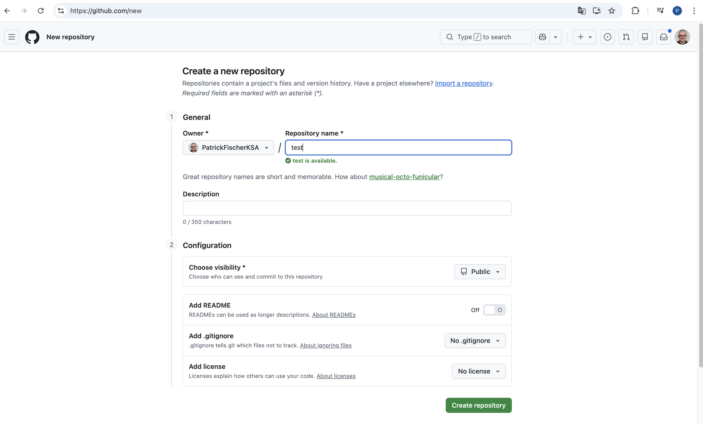
eingetragener Name
Create repository
Trage den Namen ein und erstelle das Repository.
Erfolgskriterium: Dein Repository existiert und ist geöffnet.
Phase 3
Dateien hochladen und veröffentlichen
Schritt 7
Neues Repository prüfen
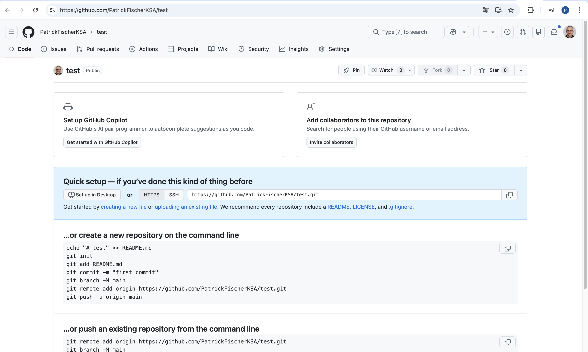
uploading an existing file
Repository ist bereit
Kontrolliere, ob dein Repository erfolgreich angelegt wurde.
Erfolgskriterium: Du erkennst den Link zum Hochladen vorhandener Dateien.
Schritt 8
Dateien hochladen vorbereiten
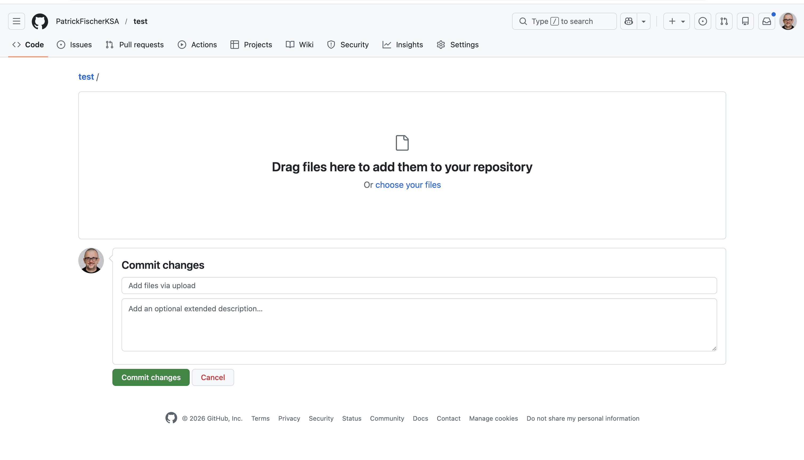
Dateien hier hineinziehen
Commit changes
Lade die Webdateien hoch oder wähle sie über den Upload-Dialog aus.
Erfolgskriterium: Die Dateien sind bereit für den Commit.
Schritt 9
Dateien vom Computer auswählen
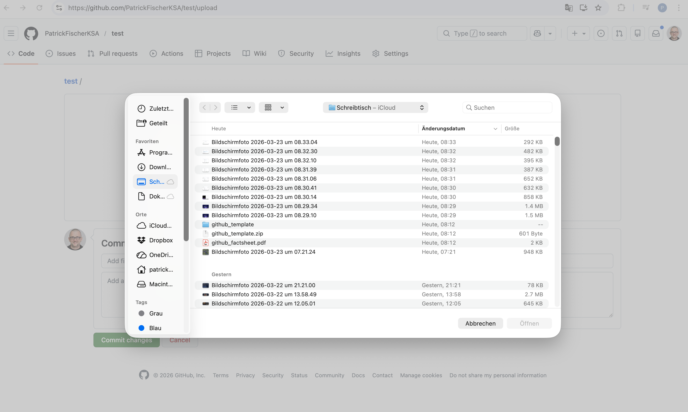
Projektdateien wählen
Wähle die richtigen Dateien aus deinem Projektordner aus.
Erfolgskriterium: Du lädst nur die benötigten Dateien hoch.
Schritt 10
Repository-Settings öffnen
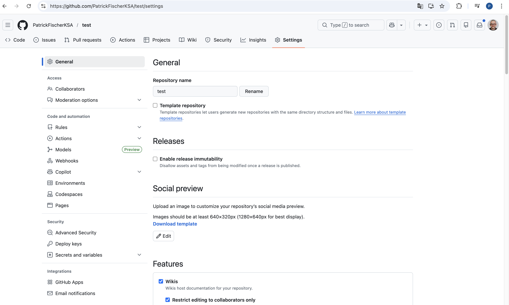
Settings
Pages in der Seitenleiste
Gehe in die Einstellungen deines Repositories.
Erfolgskriterium: Der Bereich für GitHub Pages ist erreichbar.
Phase 4
Pages aktivieren und Ergebnis sichern
Schritt 11
GitHub Pages konfigurieren
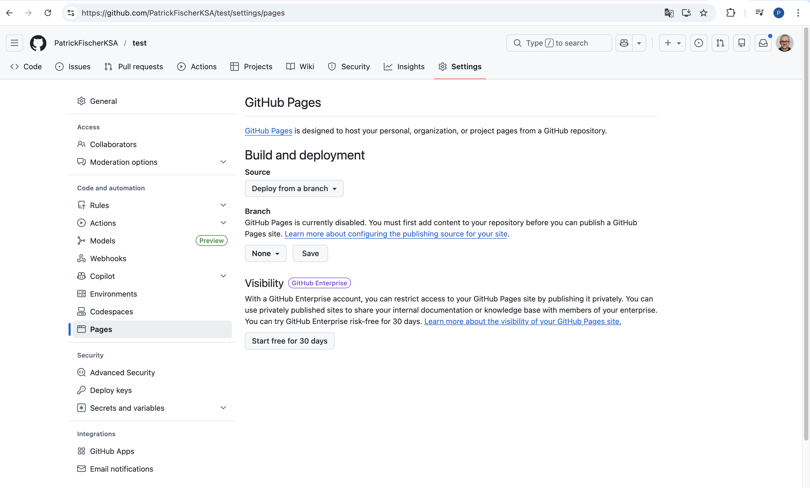
Pages
Deploy from a branch
Wähle in den Einstellungen den Bereich für GitHub Pages aus.
Erfolgskriterium: Die Publikationsart ist auf einen Branch eingestellt.
Schritt 12
Seite aufrufen, URL eintragen und reflektieren
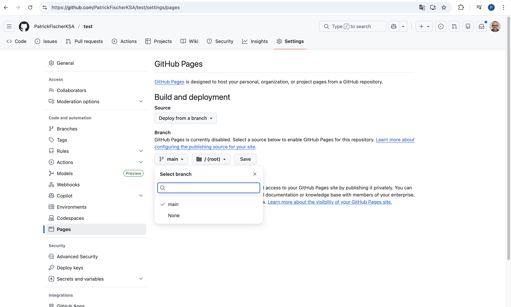
main
/ (root)
Save
Speichere die Pages-Einstellungen, warte auf die Bereitstellung und prüfe die fertige Seite.
Erfolgskriterium: Die Website ist über eine URL erreichbar.
Noch keine URL gespeichert.
Teil 3
Projektteil: Unterrichtskonzepte und Umsetzungen
Hier beginnt die freie Projektentwicklung. Du kannst aus den Materialien zu
Bahnwärter Thiel eigene Lernarrangements, Aufgabenformate und digitale
Umsetzungen entwickeln.
Diskreter Leitfaden
1. Fokus festlegen
Wähle eine Szene, Frage oder Perspektive, die deine Einheit tragen soll.
2. Materialien auswählen
Entscheide bewusst, ob du mit Text, Hörbuch, Film oder einer Kombination arbeitest.
3. Lernziele schärfen
Formuliere knapp, was Lernende am Ende erkennen, deuten oder gestalten sollen.
4. Produkt entwerfen
Plane Aufgaben, Sozialform und Ergebnis so, dass daraus ein konkretes Unterrichtsprodukt entsteht.
Materialien
Ressourcen für den Projektteil
Materialsammlung
Craft-Übersicht öffnen
Die zentrale Sammlung bündelt alle Materialien und ist dein Ausgangspunkt für den Projektteil.